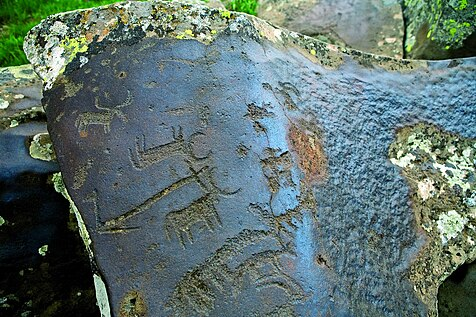

Սյունիքի մարզ, մարզի կարգավիճակ ունեցող վարչատարածքային միավոր Հայաստանի ծայր հարավում։ Հյուսիսում սահմանակից է Վայոց ձորի մարզին, հարավում՝ Իրանի Իսլամական Հանրապետության Արևելյան Ադրբեջան նահանգին, արևմուտքից՝ Ադրբեջանի Հանրապետության կազմում ընդգրկված Նախիջևանի ԻՀ-ին, իսկ արևելքից՝ Արցախի Հանրապետությանը[1]։ Սյունիքի մարզը զբաղեցնում է Զանգեզուր բնաշխարհի տարածքը, որը ներառում է Որոտան, Ողջի գետերի վերին ու միջին հոսանքների ավազանը և Զանգեզուրի՝ Մեծ Կովկասից հետո Հարավային Կովկասում ամենաբարձր լեռնաշղթայի, արևելյան լանջերը։ Մարզի ամենաբարձր լեռնագագաթը Կապուտջուղն է (3 906 մետր), իսկ ամենացածր վայրը՝ Մեղրիի կիրճը (380 մետր)։ Սյունիքն ունի հազարամյակների պատմություն։ Սյունիք կամ Սիսական անվանումով հայտնի այս երկրամասը Անանիա Շիրակացու «Աշխարհացույց»-ի համաձայն Մեծ Հայքի 9-րդ նահանգն է, որը գտնվել է Հայկական լեռնաշխարհի հյուսիս-արևելյան մասում։ Միջնադարում Սյունիքն ունեցել է 1008 գյուղ, 43 բերդ, 48 վանք։ Ստեփանոս Օրբելյան պատմիչը վկայում է, որ հայերից առաջինը քրիստոնյա են դարձել սյունեցիները և Սյունիքում քրիստոնեության տարածումը կապված է Բարդուղիմեոս առաքյալի հետ։ 10-րդ դարում Սյունիների տոհմից գահերեց իշխան Սմբատի թագադրմամբ հիմնադրվում է Սյունյաց անկախ թագավորությունը։ Հետագայում երկրամասում իրենց իշխանությունն են հաստատում հայ նախարարական տները՝ Օրբելյաններն ու Պռոշյանները։ 1720-1730-ական թվականներին Սյունիքը եղել է Դավիթ Բեկի և Մխիթար Սպարապետի առաջնորդած հայ ազգային-ազատագրական պայքարի օրրանը։ 1918-1920 թվականներին Սյունիք-Զանգեզուրը եղել է «կռվախնձոր» Հայաստանի և Մուսավաթական Ադրբեջանի միջև։ Ռուս-թուրքական ագրեսիայի հետևանքով անկում ապրած հանրապետական Հայաստանի պայմաններում՝ 1921 թվականին, Տաթևի վանքում Գարեգին Նժդեհն իր համախոհների հետ հռչակում է Սյունիքի անկախությունը՝ Լեռնահայաստանի հանրապետություն անվանումով։ Այդ պայքարի արդյունքում Սյունիքը ներառվում է Հայկական ԽՍՀ-ի կազմում և բաժանվում չորս շրջանների՝ Գորիսի, Սիսիանի, Ղափանի և Մեղրիի։ Ներկայիս Սյունիքի մարզը ձևավորվել է 1995 թվականի դեկտեմբերի 4-ի վարչատարածքային բաժանման արդյունքում՝ Կապան մարզկենտրոնով։ Կապան քաղաքը համարվում է բնակչության թվաքանակով Հայաստանի վեցերորդ խոշորագույն քաղաքը՝ շուրջ 45,711 բնակչությամբ։ Մյուս խոշոր բնակավայրերն են Գորիսը, Սիսիանը, Քաջարանը, Մեղրին, Ագարակը։ Ըստ 2023 թվականի տվյալների՝ Սյունիքի բնակչությունը կազմում է 134,600 մարդ։ Սյունիքը Հայաստանի ամենաարդյունաբերականացված մարզերից մեկն է (22.2 %)։ Մարզի արդյունաբերության հիմնական ճյուղը հանքարդյունաբերությունն է, քանի որ մարզը հարուստ է օգտակար հանածոներով։ Սյունիքի մարզում է գրանցված Հայաստանի երկրորդ ամենամեծ հարկատուն՝ Զանգեզուրի պղնձամոլիբդենային կոմբինատը։ Սյունիքում են գտնվում համապետական զբոսաշրջային կարևոր նշանակություն ունեցող մի շարք պատմամշակութային կոթողներ և բնական հուշարձաններ։ Դրանց թվում նշանավորվում են Տաթևի միջնադարյան վանական համալիրը, «Զորաց քարեր» (Քարահունջ) մեգալիթյան կառույցը, Գորիսի հին քաղաքի մաս կազմող քարանձավերն ու բրգաձև ժայռերը, Կապանի խորհրդանիշ Խուստուփ լեռը, ինչպես նաև Սիսիանի շրջակայքում գտնվող Շաքիի ջրվեժը, որը Փոքր Կովկասի լեռների ամենախոշոր ջրվեժն է՝ մինչև 18 մետր բարձրությամբ։ Սյունիքի մարզում է գտնվում «Տաթևի թևեր» ճոպանուղին, որը գրանցված է Գինեսի ռեկորդների գրքում որպես աշխարհի ամենաերկար ճոպանուղի։ Այն կապում է Հալիձորը և Տաթևի վանքը։
Անվան ծագումնաբանություն
Ժամանակակից Սյունիքի մարզի տարածքը կրում է պատմական Հայաստանի նույնանուն նահանգի անվանումը։ Պատմահայր Մովսես Խորենացու հաղորդումների համաձայն՝ Սյունիքի անվանադիր նախնին Սիսակ նահապետն է՝ Հայկի թոռն ու Գեղամի որդին։ Ամերիկահայ գիտնական Ռոբերտ Հյուսենը, սակայն, հակադրվում է այս տեսակետին և համարում, որ Սյունիքի անվանումը Սիսակի հետ կապված չէ։ Պատմաբան Արմեն Պետրոսյանը «Սյունիք» անվանումը կապում է Վանի թագավորության դիցարանի արևի աստծո՝ Շիվինիի (Սիվինիի) հետ։ Այս տեսակետի հիմքում, ի թիվս այլնի, ընկած է պատմական Սյունիքի տարածքում արևի հետ կապված տեղանունների բազմաթիվ լինելու հանգամանքը։ Տարբեր ժամանակներում Սյունիքը հիշատակվել է նաև Սյունիա, Սիսական, Սիվնիեթի, Զանգաձոր, Զանգեզուր և այլ անվանումներով։
Պատմություն
Պատմականորեն Սյունիքը եղել է Մեծ Հայքի 15 նահանգներից մեկը, որն էլ իր հերթին վարչականորեն բաժանված է եղել 12 գավառների. Երնջակ, Ճահուկ, Վայոց ձոր, Գեղարքունիք, Սոթք, Աղահեճք, Ծղուկք,Հաբանդ, Բաղք, Ձորք, Արևիք, Կովսական։ Ներկայիս Սյունիքի մարզը, սակայն, ներառում է պատմական Սյունյաց նահանգի տարածքի մի մասը։
Նախապատմական շրջան
Սյունիքը մարդու հնագույն օրրաններից մեկն է։ Անգեղակոթ բնակավայրի տարածքում գտնվող Ներքին Գոդեձորի հնավայրից հայտնաբերված գտածոները թվագրվում են մ.թ.ա. 5-րդ հազարամյակին և համարվում են Հայկական լեռնաշխարհում Պղնձի-քարի դարի մշակույթի ապացույցներից մեկը։ Սյունիքի մարզի տարածքում հայտնաբերվել են բազմաթիվ մեգալիթյան հուշարձաններ ևս։ Դրանցից ամենահայտնին Զորաց քարերն է, որը առավել հաճախ անվանվում է Քարահունջ։ Այն գտնվում է Որոտան գետի Դարբ վտակի ձորի ձախ ափին՝ Սիսիան քաղաքի շրջակայքում։ Ընդունված է համարել, որ Քարահունջը նախնադարյան ժամանակահատվածում ծառայել է որպես աստղադիտարան, սակայն գիտական բանավեճը այս հարցի շուրջ մինչ օրս արդիական է, քանի որ որոշ հետազոտողներ շարունակում են պնդել, որ այն պարզապես դամբարանադաշտ է։ Ընդունված կարծիքի համաձայն՝ կառուցվել է շուրջ 7500 տարի առաջ։ Հայկական լեռնաշխարհում նախնադարյան մարդկանց կենսագործունեության յուրահատուկ արտահայտչաձևեր են ժայռապատկերները։ Սյունիքի բարձրավանդակում՝ Ուղտասարի հնավայրում, հայտնաբերվել են ավելի քան 2000 ժայռապատկերներ՝ ցրված լեռան ստորոտներում, հրաբխային խառնարանից գոյացած մանր լճակների շուրջ, ձորակներում և դարավանդներում։ Ժայռապատկերների բովանդակությունը բազմազան է։ Դրանցում տեղ են գտել մարդուն շրջապատող բնաշխարհին, հմայական արարողություններին, տիեզերական պատկերացումներին, հատկապես՝ արևի պաշտամունքին վերաբերվող տեսարաններ։ Հայտնաբերվել են նաև որսորդությանը վերաբերող բազմաթիվ ժայռապատկերներ։ Տարբեր մեծության ժայռաբեկորների վրա դրոշմված են եղջերուների, գիշատիչ կենդանիների, մարդկանց մեծադիր ծավալային պատկերներ։ Ուղտասարում ամենահին ժայռապատկերները թվագրվում են մ.թ.ա. 5-ից 4-րդ հազարամյակներին։ Սյունիքում հայտնաբերվել են նաև թվով չորս վիշապաքարեր, որոնք բացառապես Հայկական լեռնաշխարհում հանդիպող քարակոթողներ են։
Մեգալիթյան աստղադիտարան կամ դամբարանադաշտ Զորաց քարեր պատմամշակութային արգելոցի համայնապատկերը։

Վայրի ցուլեր պատկերող ժայռապատկերներ, որոնք հայտնաբերվել են Սյունիքի բարձրավանդակի կենտրոնական հատվածում՝ Ուղտասարի հնավայրում։
Հնագույն ժամանակներ
Սյունիքի մերօրյա տարածքը դեռևս հնագույն ժամանակներից ներառված է եղել հայկական պետական
կազմավորումների կազմում։ Մ.թ.ա. 1-ին հազարամյակում Սյունիքի տարածքում բնակվել են բազմաթիվ ցեղեր,
որոնք արդեն մ․թ․ա․ 8-րդ դարի սկզբից աստիճանաբար սկսել են միավորվել Վանի թագավորության ազդեցության
ներքո։ Վանի թագավորության արքաները Սյունիքի տարածքում ծավալել են շինարարական աշխատանքներ, հիմնել
բերդեր, քաղաքներ և ջրանցքներ։
Մ․թ․ա․ 4-րդ դարի վերջին Սյունիքի տարածքը հայտնվում է Երվանդունիների համահայկական թագավորության
կազմում, իսկ մ․թ․ա․ 189 թվականին՝ անցնում Արտաշեսյանների թագավորությանը։ Արտաշես Ա Բարեպաշտ արքան
Սյունիքը դարձնում է Մեծ Հայքի 15 նահանգներից մեկը։ Մեծ Հայքի թագավորության՝ «աշխարհների»
(նահանգների) վարչական բաժանումից հետո, Սյունիների կամ Սիսակյանների տոհմը ձեռք է բերում Սյունյաց
«աշխարհակալի» պաշտոնը։ Սյունիների տոհմի հաստատումը երկրամասում, սակայն, վերագրվում է Հայոց ավանդական
թագավոր Վաղարշակին, որը Սյունիներին նշանակել է Մեծ Հայքի արևելյան սահմանագլխի կուսակալ և արքունի
զորքերի հրամանատար։
Սյունիները եղել են Մեծ Հայքի թագավորության ամենահզոր նախարարական տներից մեկը․ համաձայն Զորանամակի՝
վերջիններս մարտադաշտ են դուրս բերել 19 400 հեծյալների։ Ցուցաբերած ծառայությունների և սխրանքների
համար, արքաներից արժանացել են մեծամեծ պարգևների ու պատիվների, արտոնվել են բազմել արծաթե գահույքին,
կրել մարգարտյա վարսակալ, վարազագիր մատանի և ոսկյա մական։
Սյունիների իշխանանիստ կենտրոնը հնում եղել է Ծղուկք գավառի Շաղատ գյուղաքաղաքը։ Սյունիքի բնակչության
հիմնական զբաղմունքը կազմում եղել է երկրագործությունն ու անասնապահությունը։
Վաղմիջնադարյան Սյունիք
Սյունիքը առավելապես վերելք և ծաղկում է ապրում միջնադարյան ժամանակահատվածում։ 66 թվականին այն
ներառվում է Արշակունյաց թագավորության կազմ։ Սյունիները Արշակունիների արքունիքում գրավում էին 1-ին
աթոռը։
301 թվականին՝ Տրդատ Գ Մեծի օրոք, քրիստոնեությունը Հայաստանում ընդունվում է որպես պետական կրոն։ Ըստ
պատմիչ Ստեփանոս Օրբելյանի՝ քրիստոնեական կրոնը ամենից արագ տարածվում է հենց Սյունյաց նահանգում։
Տրդատի Գ-ի իշխանության տարիներին՝ 314 թվականին, հիմնադրվում է Սյունիքի իշխանությունը որպես ենթակա
քաղաքական կազմավորում։ Սյունիքի առաջին իշխան Անդովկ Ա Սյունին, ի թիվս այլ մեծամեծերի, մասնակցել է
Հռոմեական կայսրության Կեսարիա քաղաք մեկնած խմբին, որը պետք է ականատես լիներ հայոց առաջին կաթողիկոս
Գրիգոր Լուսավորչի օծմանը։ Նրա որդին՝ Վաղինակ Ա Սյունին, ով ժառանգել էր հոր գահը, հայոց թագավոր
Խոսրով Գ Կոտակի գահակալման տարիներին մասնակցում է Աղձնիք նահանգի ապստամբ բդեշխ Բակուրի դեմ
արշավանքին, թագավորի հրամանով ամուսնացել սպանված բդեշխի դստեր հետ և կառավարել Աղձնյաց բդեշխությունը։
Բաղաբերդի ամրոցը, որ գտնվում է Ձորք գավառում, հիմնադրվել է 4-րդ դարում։
Վաղինակ Ա Սյունուն հաջորդում է եղբայրը՝ Անդովկ Բ Սյունին։ Նա կառավարում է մոտ կես դար՝ 339-385 թվականներին, և բարձր դիրք գրավում Տիրան Բ, Արշակ Բ, Պապ ու Վարազդատ թագավորների արքունիքում։ Արշակ Բ-ի իշխանության տարիներին տեղի ունեցած խառնակությունների ընթացքում թագավորը բաժանվում է Ողիմպիա թագուհուց, ով Հռոմի կայսեր ազգականն էր, և ամուսնանում իր կողմից սպանված Գնելի այրու՝ Անդովկ իշխանի դուստր Փառանձեմ Սյունու հետ, ով ավելի ուշ որպես հայոց տիկնաց տիկին ղեկավարում է Արտագերս ամրոցի հերոսական պաշտպանությունը։ 5-րդ դարի երկրորդ տասնամյակում հայ նախարարների շարքում մրցակցությունն ուժեղանում է Սյունիների ու Մամիկոնյանների միջև։ 428 թվականին Արշակունիների թագավորությունն անկում է ապրում, իսկ Սյունիքը վերածվում է մարզպանական Հայաստանի ծայրագավառի։ Սյունիքի երբեմնի իշխան Վասակ Սյունին, ղեկավարելով դավաճան հայկական ազնվականությանը, մինչ Հայոց թագավորության անկումը դիմել էր պարսից արքային՝ Հայաստանը կործանելու և պարսկական մարզպանության վերածելու խնդրանքով։ Արտաշես Դ Արշակունու գահընկեց արվելուց հետո Վասակ Սյունին դառնում է Հայաստանի և Վրաստանի մարզպան, սակայն Վարդանանց պատերազմի, մասնավորապես ՝ Ավարայրի ճակատամարտում հայերի հաջողություններով պայմանավորված, աքսորվում է պարսից շահի հրամանով։ 591 թվականին Պարսկաստանի և Բյուզանդիայի միջև Հայքի բաժանման արդյունքում, Սյունիքը միացվում է Ատրպատականին՝ որպես «շահր»։
Հայաստանի առաջին հանրապետություն
1918-1920 թթ Սյունիքը, ինչպես նաև Նախիջևանը և Արցախը, դարձել էր վիճելի տարածք Հայաստանի և Ադրբեջանի հանրապետության միջև։ 1918թ. հուլիսին Սյունիք է գալիս Անդրանիկը։ 1918թ. հոկտեմբերին Անդրանիկը իրեն ճանաչում է որպես Սյունիքի գեներալ-կոմիսար։ Տարեվերջին Սյունիք է ժամանում նաև Գարեգին Նժդեհը։ 1920 թ. սկզբին ստեղծվում է Զանգեզուր-Ղարաբաղյան մարզային խորհուրդ, որի ղեկավար մարտին դառնում է Արսեն Շահմազյանը, նոյեմբերին՝ Սերգեյ Մելիք-Յոլչյանը։ 1920թ. ապրիլին Նժդեհը ջախջախում է Նուրի փաշայի զորքերին, ապա հուլիսին քաշվում Խուստուփ։ 1920թ. սեպտեմբեր-հոկտեմբերից պայքարը շարունակում է Պողոս Տեր-Դավթյանը, ում շուտով միանում է Նժդեհը և նրանք միասին 1920թ. նոյեմբերի 21 ազատագրում են Գորիսը և հաստատում իրենց իշխանությունը։ 1920-ի դեկտեմբերի 2-ին Թուրքիան, որն այդ ժամանակ գրավել էր Հայաստանի մեծ մասը, ստիպեց հայկական կառավարությանը ստորագրել Ալեքսանդոպոլի համաձայնագիրը, որով Հայաստանը Ադրբեջանին էր հանձնում Սյունիքը։ Սակայն Սյունիքի հայ բնակչությունը չճանաչեց այս համաձայանգիրը և զինված պայքարի ելավ Գարեգին Նժդեհի հրամանատարությամբ։
Միջնադարյան կամուրջ Կապանում, որի կառուցումը թվագրվում է 871 թվականին։ Ներկայումս գտնվում է Շիկահողի պետական արգելոցի տարածքում։
.jpg)
Մեղրու բերդը 11-րդ դարում կառուցված պաշտպանական ամրություն է, որը գտնվում է Մեղրի քաղաքի շրջակա լեռնաշղթայի գագաթների վրա։
Խորհրդային ժամանակաշրջան, 1921-1991
Հայկական ԽՍՀ-ում Սյունիքը առանձին վարչական միավոր չէր կազմում, այլ բաժանված էր մի քանի շրջանների։ Հայաստանի վերանկախացումից հետո Սյունիքը կրկին ինքնուրույն մարզ է կազմում։
Կլիմա
Հաճելի կլիմայական պայմանների շնորհիվ տուրիստական բարձր սեզոնը Հայաստանում բավականին երկար է տևում։ Մարտից մինչև խոր աշուն օրերը տաք են, ձմեռը սովորաբար երկար չի տևում։ Տեղումների արտահայտված սեզոնը փոփոխական է։
Բնակչություն
2021 թվականի հունվարի 1-ի դրությամբ Սյունիքի մարզի մշտական բնակչության թվաքանակը կազմում էր 135.8 հազար մարդ, որից 91.8 հազար քաղաքային բնակչություն և 44.0 հազար գյուղական բնակչություն[2]։
Սյունիքի մարզի մշտական բնակչության թվաքանակը, հունվարի 1-ի դրությամբ, 1000 մարդ
| 2017 | 2018 | 2019 | 2020 | 2021 | |
| Ամբողջ բնակչություն | 138.9 | 138.4 | 137.6 | 137.3 | 135.8 |
| այդ թվում ` | |||||
| Քաղաքային բնակչություն | 93.9 | 93.8 | 93.4 | 93.2 | 91.8 |
| Գյուղական բնակչություն | 45.0 | 44.6 | 44.2 | 44.1 | 44.0 |
Վարչատարածքային բաժանում
Սյունիքի մարզը կազմված է 7 համայնքներից, որոնք իրենց հերթին կազմված են քաղաքային և գյուղական բնակավայրերից։ Սյունիքի մարզի համայնքներն են Գորիսը, Կապանը, Մեղրին, Սիսիանը, Տաթևը, Տեղը, Քաջարանը:
Տնտեսություն
Սյունիքի մարզի տնտեսության ընդհանուր ծավալում գերակշռողը արդյունաբերության և գյուղատնտեսության
ոլորտներն են։
Արդյունաբերության հիմնական ճյուղերն են հանքարդյունաբերությունը, որը 2020 թվականին ապահովել է մարզում
արտադրված ամբողջ արդյունաբերական արտադրանքի 84%-ը, սննդամթերքի արտադրությունը (8%) և
էլեկտրաէներգիայի արտադրությունը (7%)[2]։
Սյունիքի մարզում է կենտրոնացած Հայաստանի հանքագործական արդյունաբերությունը։ 2020 թվականին
Հայաստանում արտադրված հանքագործական արդյունաբերության արտադրանքի 75%-ն ապահովել է Սյունիքը։
Արդյունաբերական արտադրանքի արտադրությունն ըստ տնտեսական գործունեության տեսակների Սյունիքի մարզում 2020 թվականին[2]
Հանքագործական արդյունաբերության արտադրանքի ծավալը Սյունիքի մարզում[2][4][5][6] (ընթացիկ գներով, մլն․ դրամ)
| 2016 | 2017 | 2018 | 2019 | 2020 | |
| Հայաստան | 256,481.4 | 341,099.1 | 300,744.8 | 356,780.6 | 403,455.5 |
| Սյունիք | 167,275.4 | 236,940.3 | 260,104.1 | 283,408.2 | 301,645.8 |
| Սյունիքի բաժինը Հայաստանի հանքագործական արդյունաբերության մեջ |
65.2% | 69.5% | 86.5% | 79.4% | 74.8% |
Մարդկային ներուժի զարգացման ինդեքս
Ստորև ներկայացված է Մարդկային ներուժի զարգացման ինդեքսի փոփոխությունը ըստ տարիների[8]։ Այն իրենից ներկայացնում է մարզի կրթական մակարդակի, կյանքի սպասվող տևողության և մեկ անձին ընկնող տարեկանի եկամուտների համախառն ցուցանիշ։
| Տարի | 1990 | 1995 | 2000 | 2005 | 2010 | 2015 | 2017 |
| Ցուցանիշ | 0.642 | 0.615 | 0.659 | 0.698 | 0.729 | 0.747 | 0.753 |